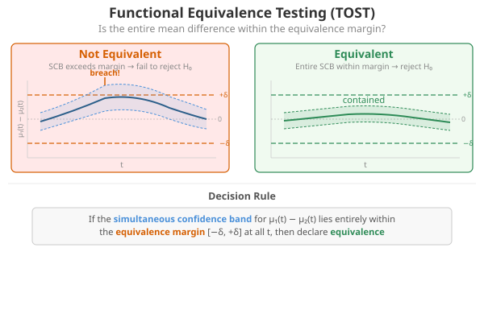
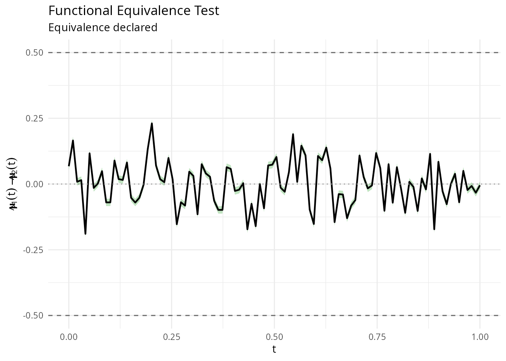
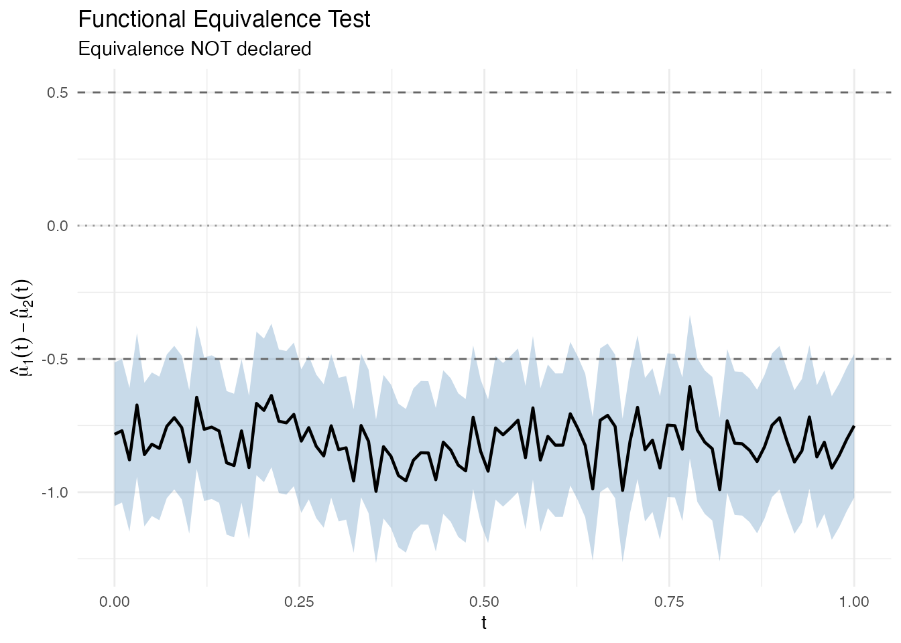
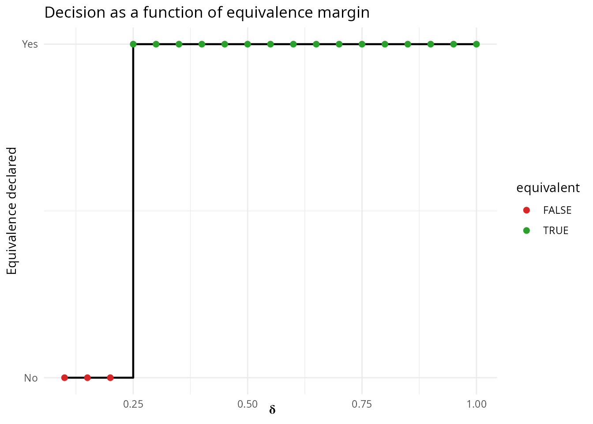
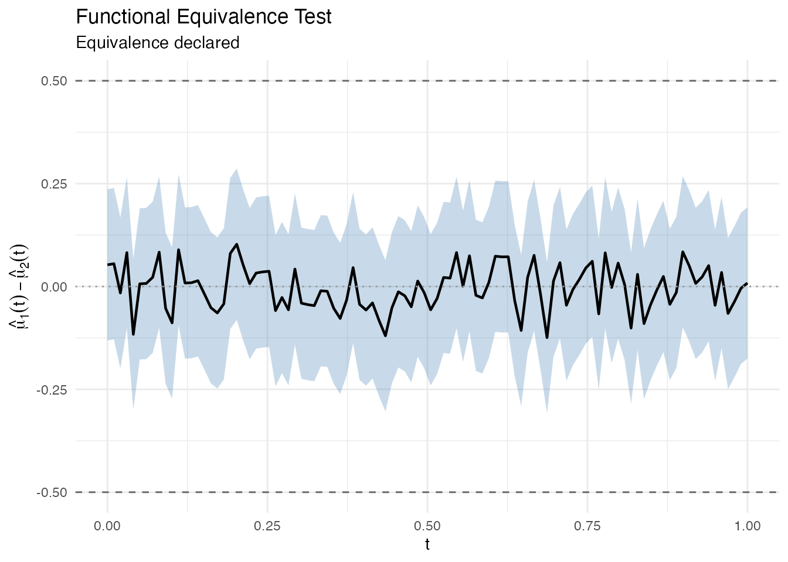

Functional Equivalence Testing
Source:vignettes/articles/equivalence-testing.Rmd
equivalence-testing.RmdIntroduction
Classical hypothesis tests (like group.test) ask whether
two groups of curves are different. But in many applications
the relevant question is the opposite: are two groups of curves
equivalent?
Examples include:
- Bioequivalence: Do a generic and brand-name drug produce equivalent concentration-time profiles?
- Process validation: Does a new manufacturing process produce output curves within tolerance of the old one?
- Reproducibility: Do two labs produce equivalent functional measurements?
fequiv.test() implements a functional
TOST (Two One-Sided Tests) procedure based on the
supremum norm. It constructs a simultaneous confidence band (SCB) for
the mean difference and checks whether the entire band lies within an
equivalence margin
.
Hypotheses:
- : (NOT equivalent)
- : (equivalent)

Example 1: Equivalent curves
Two samples drawn from the same distribution should be declared equivalent with a reasonable .
# Two groups from the same process
n1 <- 30
n2 <- 25
X1 <- matrix(0, n1, m)
X2 <- matrix(0, n2, m)
for (i in 1:n1) X1[i, ] <- sin(2 * pi * t_grid) + rnorm(m, sd = 0.3)
for (i in 1:n2) X2[i, ] <- sin(2 * pi * t_grid) + rnorm(m, sd = 0.3)
fd1 <- fdata(X1, argvals = t_grid)
fd2 <- fdata(X2, argvals = t_grid)
result <- fequiv.test(fd1, fd2, delta = 0.5, n.boot = 1000, seed = 42)
print(result)
#> Functional Equivalence Test (TOST)
#> ===================================
#> Data: fd1 and fd2
#> Two-sample test, n1 = 30 , n2 = 25
#> Bootstrap method: multiplier
#> Equivalence margin (delta): 0.5
#> Significance level (alpha): 0.05
#> ---
#> Test statistic (sup|d_hat|): 0.2307
#> Critical value: 0.2708
#> SCB range: [ -0.4602 , 0.5015 ]
#> P-value: 0.104
#> ---
#> Decision: Fail to reject H0 -- equivalence NOT declaredThe plot shows the mean difference curve (black), the simultaneous confidence band (green = equivalence declared, red = not declared), and the equivalence margins (dashed lines at ).
plot(result)
Example 2: Non-equivalent curves
When the two groups have genuinely different mean functions, the test should not declare equivalence.
# Group 2 has a shifted mean
X2_shifted <- matrix(0, n2, m)
for (i in 1:n2) X2_shifted[i, ] <- sin(2 * pi * t_grid) + 0.8 + rnorm(m, sd = 0.3)
fd2_shifted <- fdata(X2_shifted, argvals = t_grid)
result2 <- fequiv.test(fd1, fd2_shifted, delta = 0.5, n.boot = 1000, seed = 42)
print(result2)
#> Functional Equivalence Test (TOST)
#> ===================================
#> Data: fd1 and fd2_shifted
#> Two-sample test, n1 = 30 , n2 = 25
#> Bootstrap method: multiplier
#> Equivalence margin (delta): 0.5
#> Significance level (alpha): 0.05
#> ---
#> Test statistic (sup|d_hat|): 0.9969
#> Critical value: 0.2694
#> SCB range: [ -1.2663 , -0.3345 ]
#> P-value: 1
#> ---
#> Decision: Fail to reject H0 -- equivalence NOT declared
plot(result2)
The red band extends well beyond the dashed equivalence margins, so equivalence is not declared.
Choosing delta
The equivalence margin is the maximum sup-norm difference you consider scientifically negligible. It must be chosen before looking at the data, based on domain knowledge:
- Too large: trivially declares equivalence (low power against real differences)
- Too small: almost never declares equivalence (conservative)
A useful diagnostic is to sweep over values and see where the decision flips:
deltas <- seq(0.1, 1.0, by = 0.05)
decisions <- sapply(deltas, function(d) {
fequiv.test(fd1, fd2, delta = d, n.boot = 500, seed = 42)$reject
})
df_sweep <- data.frame(delta = deltas, equivalent = decisions)
ggplot(df_sweep, aes(x = delta, y = as.numeric(equivalent))) +
geom_step(linewidth = 0.8) +
geom_point(aes(color = equivalent), size = 2) +
scale_color_manual(values = c("FALSE" = "#d62728", "TRUE" = "#2ca02c")) +
labs(x = expression(delta), y = "Equivalence declared",
title = "Decision as a function of equivalence margin") +
scale_y_continuous(breaks = c(0, 1), labels = c("No", "Yes"))
One-sample test
You can also test whether a single sample’s mean is equivalent to a known reference function .
# Test if the sample mean is equivalent to the true generating function
mu0 <- sin(2 * pi * t_grid)
result_one <- fequiv.test(fd1, delta = 0.5, mu0 = mu0, n.boot = 1000, seed = 42)
print(result_one)
#> Functional Equivalence Test (TOST)
#> ===================================
#> Data: fd1
#> One-sample test, n = 30
#> Bootstrap method: multiplier
#> Equivalence margin (delta): 0.5
#> Significance level (alpha): 0.05
#> ---
#> Test statistic (sup|d_hat|): 0.1243
#> Critical value: 0.1839
#> SCB range: [ -0.3082 , 0.2866 ]
#> P-value: <2e-16
#> ---
#> Decision: Reject H0 -- equivalence declared
plot(result_one)
Bootstrap methods
fequiv.test supports two bootstrap methods:
-
"multiplier"(default): Gaussian multiplier bootstrap. Fast and asymptotically valid. Recommended for most applications. -
"percentile": Resampling-based bootstrap. More robust with small samples or heavy-tailed data.
result_pct <- fequiv.test(fd1, fd2, delta = 0.5, n.boot = 1000,
method = "percentile", seed = 42)
print(result_pct)
#> Functional Equivalence Test (TOST)
#> ===================================
#> Data: fd1 and fd2
#> Two-sample test, n1 = 30 , n2 = 25
#> Bootstrap method: percentile
#> Equivalence margin (delta): 0.5
#> Significance level (alpha): 0.05
#> ---
#> Test statistic (sup|d_hat|): 0.2307
#> Critical value: 0.2691
#> SCB range: [ -0.4585 , 0.4998 ]
#> P-value: 0.1
#> ---
#> Decision: Reject H0 -- equivalence declared